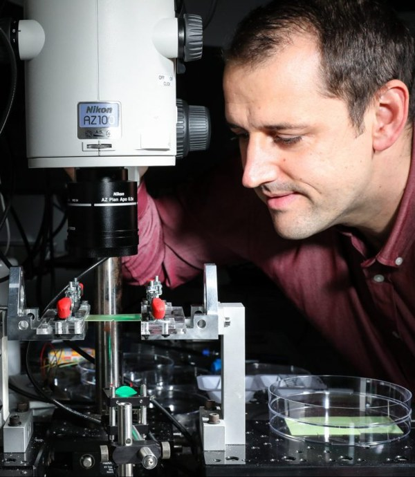

Team
Under construction. The group is being assembled at IUSTI — this page will soon
list current members. In the meantime, see the open positions under
Openings.
Head of group

Dr. John M. Kolinski
Chaire de Professeur Junior (CPJ) at IUSTI (UMR 7343, CNRS / Aix-Marseille Université), studying the mechanics of soft interfaces — fracture, contact, and wetting — through direct high-speed and interferometric imaging.